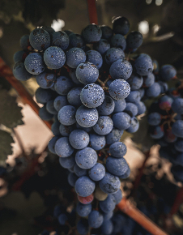
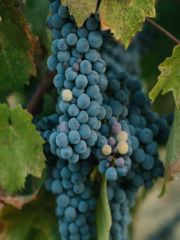
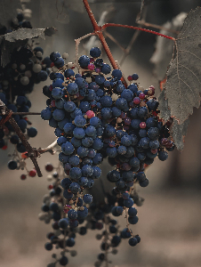

Nuestros Vinos
CABERNET SAUVIGNON
Rojo rubí intenso. En nariz, se presenta frutado, con notas de fruta negra y toques especiados que recuerdan a la vainilla, pimiento rojo y pimientas, mientras, en boca, se reafirman los acentos frutados. Los taninos, presentes, envolventes y sedosos nos denotan su personalidad y sutileza. Su final es agradable, largo y persistente.
SYRAH
Rojo rubí oscuro, con densos tonos púrpura. La nariz es intensa y concentrada, con aromas a mermelada de cereza negra y notas de tabaco y vainilla. La sensación en boca es suave e incitante, con notas a fruta madura (cereza, ciruela) y un final agradable y persistente.
TANNAT
Rojo intenso con matiz violáceo. Regala una nariz generosa y aromática (frutos rojos y negros, como la mora) y sugestivos acentos de cacao y tabaco. En boca aparecen las notas confitadas. Firme en paladar, es dueño de un gran cuerpo, complejo y elegante, a la vez. Un clásico de Burdeos versión argentino.
MALBEC
Granate intenso, con reflejos púrpuras. Es un típico y bien logrado ejemplo de la variedad emblemática de la Argentina. Las notas aromáticas florales y frutadas (ciruela, cassis, frutilla) pueden ser fácilmente apreciadas. La armónica redondez obtenida se debe, en parte, a los jugosos taninos que le otorgan además suavidad un largo y agradable final de boca.
